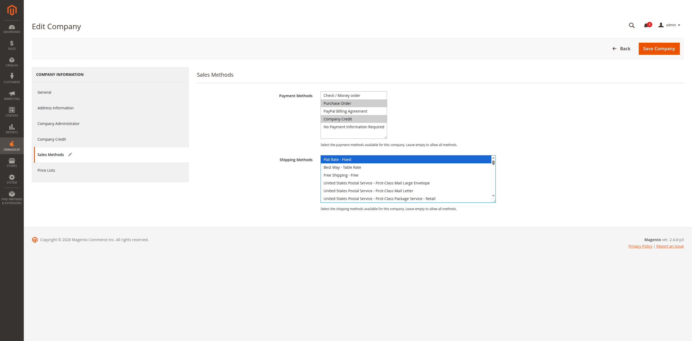
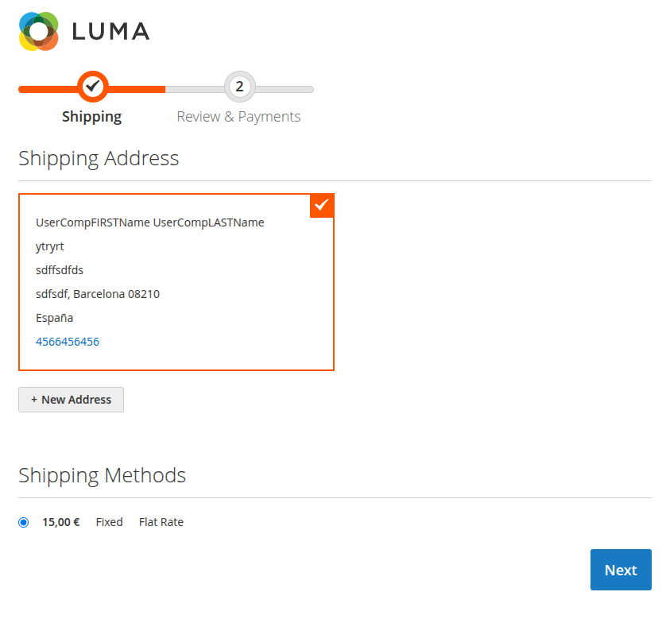
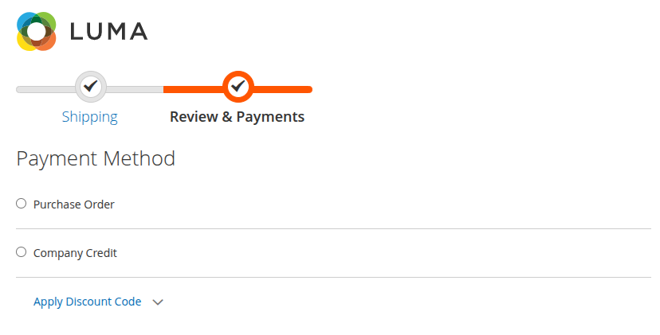

OrangeCat Company Methods
User Manual & Documentation
User Manual & Documentation
The Orangecat Company Methods module extends the B2B capabilities of Magento 2 by allowing administrators to assign specific Payment and Shipping methods to individual companies.
This ensures that each company only sees the delivery and payment options that have been negotiated or authorized for them, providing a tailored purchasing experience for B2B clients.
Administrators can manage the available methods for each company directly from the Company edit screen in the Magento Admin Panel.
Navigate to Orangecat > Companies, edit a company, and locate the Sales Methods tab. Here you can select which payment and shipping methods are allowed for this specific company.

Figure 2.1: Assigning Payment and Shipping Methods to a Company
When a customer associated with a company proceeds to checkout, the system automatically filters the available methods based on the company's configuration.
Only the shipping methods assigned to the customer's company will be displayed during the shipping step of the checkout.

Figure 3.1: Delivery methods filtered by company settings
Similarly, the payment step will only show the payment options that have been authorized for that company.

Figure 3.2: Payment methods filtered by company settings